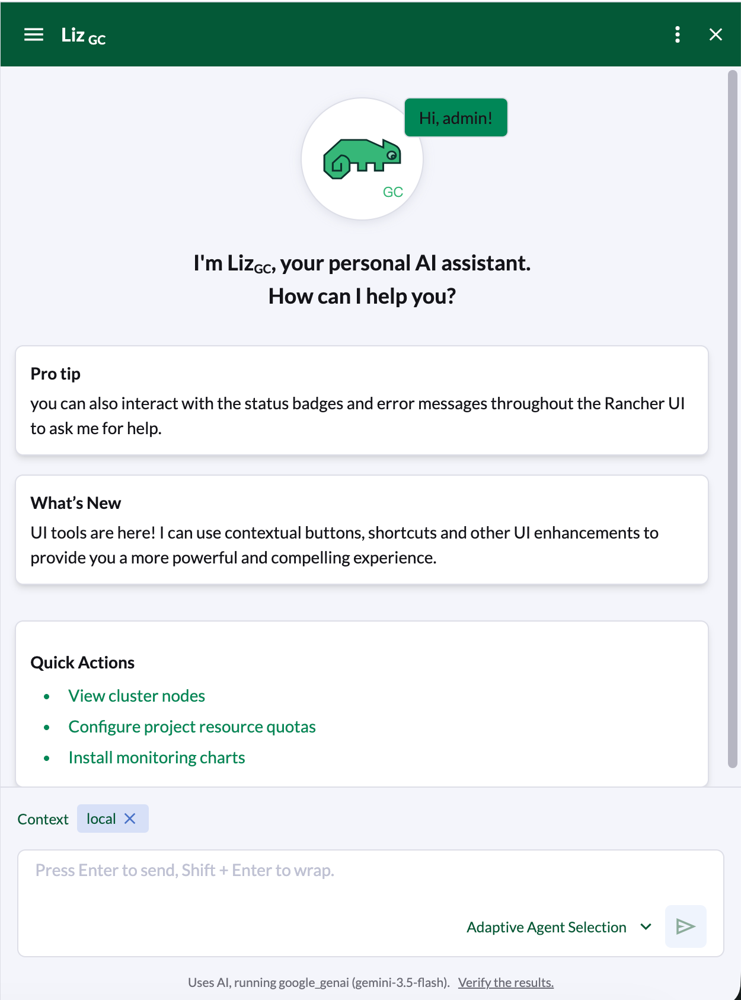
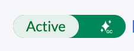
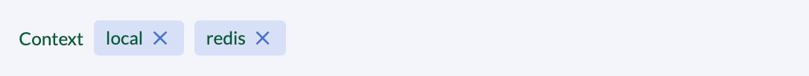
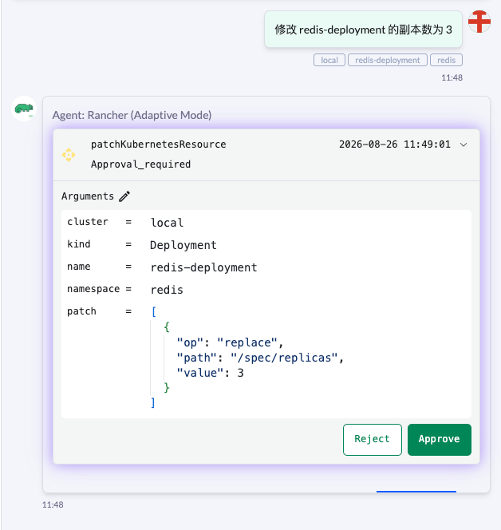
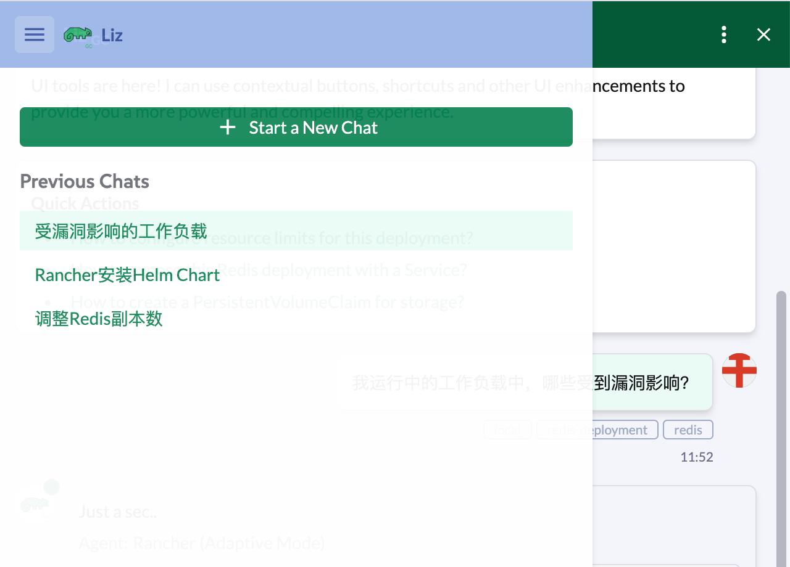
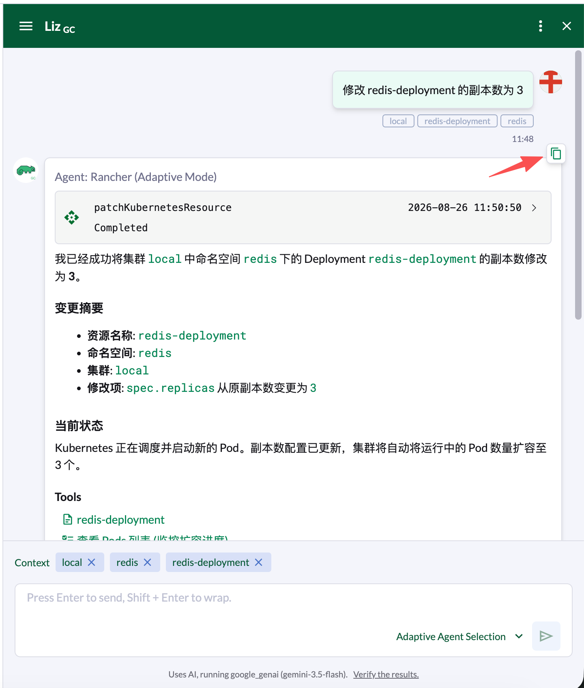
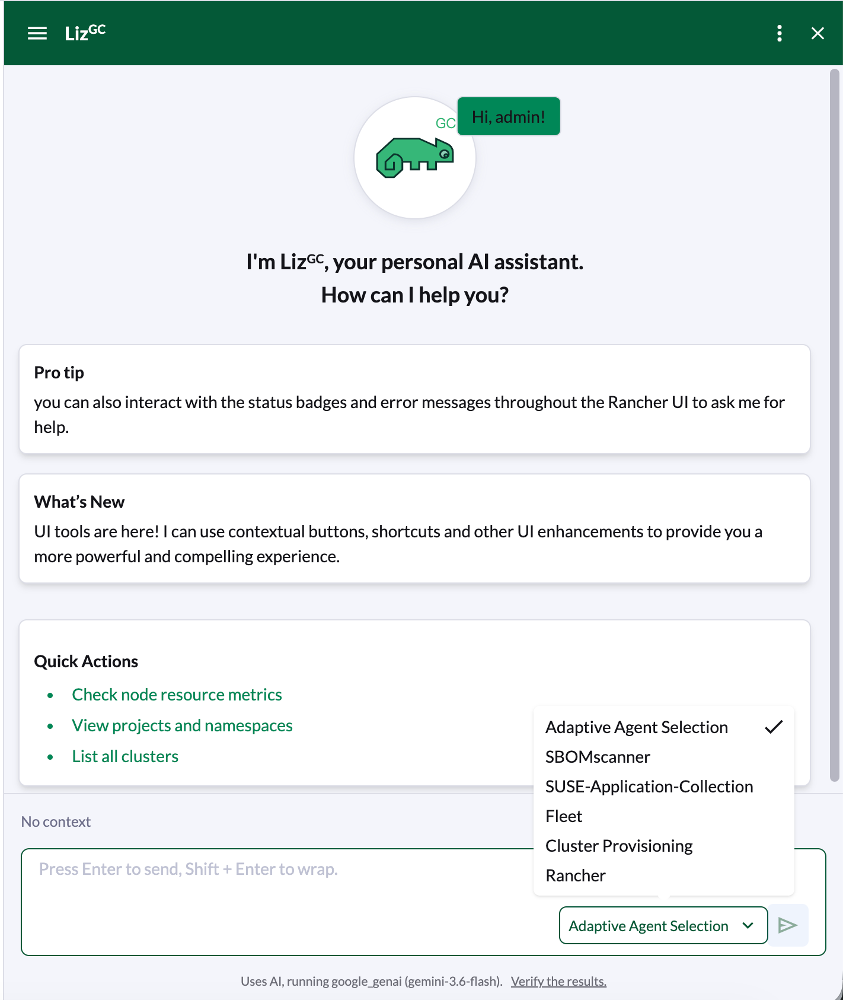

与 Liz GC（AI 助手）交互
开始使用 Liz GC
Liz GC 包含一个常驻的 AI 助手 Liz GC。 您可以随时在 UI 中点击 Liz GC 图标 打开助手。
打开侧边栏后，Liz GC 会显示欢迎消息，其中包含使用提示、简短的新闻资讯以及帮助您快速开始使用的建议列表（请参考 ui-tools 部分）。

上下文感知
Liz GC 可以准确理解您当前正在查看的内容。任何带有状态标记的资源都会显示 Ask Liz GC 按钮。
-
点击资源旁边的 Ask Liz GC 滑动按钮图标。

-
侧边栏将打开，并自动针对该资源生成相应的提示词。
-
Liz GC 会自动获取资源名称、集群 ID 和命名空间，从而提供准确的帮助。

审批操作
安全是首要考虑因素。
如果您要求 Liz GC 或其某个专用 Agent 修改您的环境（例如更新 Deployment 或更改集群配置），Liz GC 会显示审批提示。

您必须点击 Approve 按钮 ，系统才能应用任何更改。
管理对话
您可以同时进行多个线程操作，也可以保存历史记录以供日后参考。
-
创建新聊天: 要开始新的会话，请点 New Chat 图标。

-
复制历史记录: 要保存你的会话记录，请点击页面右上角的复制按钮。复制后，可以粘贴内容到文本保存。

切换 Agents
默认情况下，Liz GC 使用 "智能路由"（Smart Routing）将您的请求发送给最合适的专用 Agent（例如，针对漏洞问题使用 Security Agent）。
如果您希望手动选择特定的 Agent：
-
点击 Agent Selection 图标.

-
从列表中选择所需的 Agent。
示例提示词
不知道从哪里开始？不妨问问 Liz GC 这些问题：
| 类别 | 用户提示词 | 处理 Agent |
|---|---|---|
安全性 |
"我运行中的工作负载中，哪些受到漏洞影响？" |
Security Agent（获取 CVE 和扫描数据） |
资源清 |
"列出我所有集群中使用的所有注册表。" |
Rancher Agent （查询集群范围的资源） |
容量 |
"显示内存消耗最多的前 5 个 Pod。" |
Rancher Agent （查询资源使用情况数据） |
导航 |
"这个状态是什么意思？" |
Context Logic（根据 UI 中的资源状态进行解释） |
故障排除 |
"应用运行缓慢，请找出根本原因。" |
SUSE Observability Agent （分析指标和日志） |
技能提升 |
"如何在 Rancher 中安装 Helm Chart？" |
*Knowledge *（提供文档来源） |
集群置备 |
"分析集群并排查其中存在的问题。" |
Rancher-Provisioning Agent （检查基础设施运行状况） |